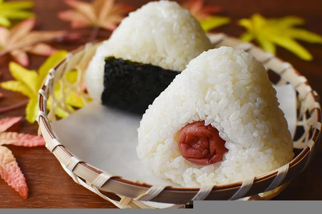

Onigiri

Description
a Japanese dish consisting of small balls or triangles of rice stuffed with a pickled or salted filling, and typically wrapped in dried seaweed.
Ingredients
- 4 cups uncooked short-grain white rice
- 4 ½ cups water
- 1 cup water
- ¼ teaspoon salt
- ¼ cup bonito shavings (dry fish flakes)
- 2 sheets nori (dry seaweed), cut into 1/2-inch strips
- 2 tablespoons sesame seeds
Steps
- Wash the rice in a mesh strainer until the water runs clear. Combine washed rice and 4 1/2 cups water in a saucepan. Bring to a boil over high heat, stirring occasionally. Reduce heat to low; cover. Simmer rice until the water is absorbed, 15 to 20 minutes. Let rice rest, for 15 minutes to allow the rice to continue to steam and become tender. Allow cooked rice to cool.
- Combine 1 cup water with the salt in a small bowl. Use this water to dampen hands before handling the rice. Divide the cooked rice into 8 equal portions. Use one portion of rice for each onigiri.
- Divide one portion of rice in two. Create a dimple in the rice and fill with a heaping teaspoon of bonito flakes. Cover with the remaining portion of rice and press lightly to enclose filling inside rice ball. Gently press the rice to shape into a triangle. Wrap shaped onigiri with a strip of nori. Sprinkle with sesame seeds. Repeat to make a total of 8 onigiri.